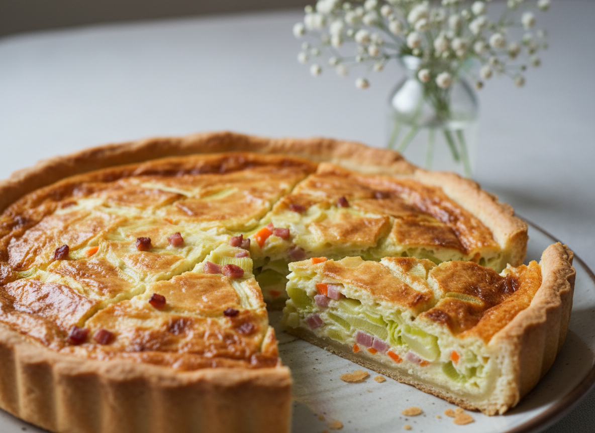

Frittata mit Gemüse
Zutaten für:
| 200g | Mehl |
| 100g | Butter |
| 100g | Quark |
| 1 TL | Backpulver | 1 TL | Salz |
| 400 g | Lauch |
| 5 | Möhren |
| 1 | große Zwiebel |
| 200g | Käse, gerieben |
| 200g | gekochter Schinken |
| 200g | Sahne |
| 4 | Ei(er) |
| 1 | Prise Salz |
| 1 | Messerspitze Pfeffer |
Zubereitung
Erster Schritt bei deiner Quiche: Backofen auf 170-190 °C aufheizen. Zu Beginn verarbeitest du Mehl, Quark, Butter mit 1 TL Salz und einem Teelöffel Backpulver zu einem glatten Teig. Ordentlich kneten, dann wird der Teig richtig fluffig. Dann bereitest du deine Quicheform vor. Dafür fettest du die Quicheform ein und gibst ein bisschen Mehl hinein und drehst die Form, damit die Form mit Mehl bedeckt ist. Den Teig in die Form bringen und am Rand ausstreichen, dann mit einer Gabel einpiksen. Backpapier rund schneiden und fürs blinde Backen legst du getrocknete Erbsen oder Hülsenfrüchte drauf. Dann ca. 15 Minuten vorbacken.
Währenddessen kannst du mit deiner Füllung weitermachen. Dazu Zwiebel, Möhren würfeln und den Porree in ca. 0,5 cm breite Streifen schneiden. In einer Pfanne andüsten, bis alles leicht angebräunt ist. Vom Herd nehmen. Dann kommt unser vorletzter Schritt, die Sahne-Mischung. Dafür Käse mit Eiern und Sahne verquirlen (niedrige Stufe) und gewürfelten Schinken untergeben. Abschmecken mit Salz und Pfeffer. Vorgebackenen, leicht gebräunten Boden aus dem Ofen nehmen, Backpapier und Erbsen entfernen und Lauch- mischung gleichmäßig verteilen. Darüber Sahne-Käse-Mischung verteilen. Ca. 50-60 Minuten goldbraun backen und Stäbchenprobe machen. Dann aus dem Ofen nehmen und servieren. Dazu passt super ein Feldsalat. (Danke an meine Mama für das tolle Rezept!)
Guten Appetit!
Rezept erstellt von:
 Timo
Timo